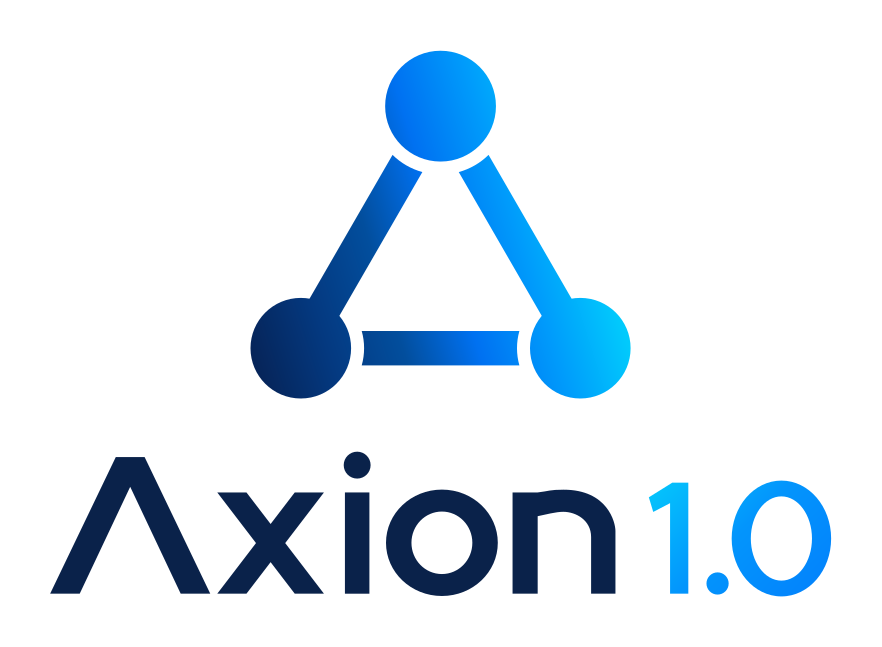
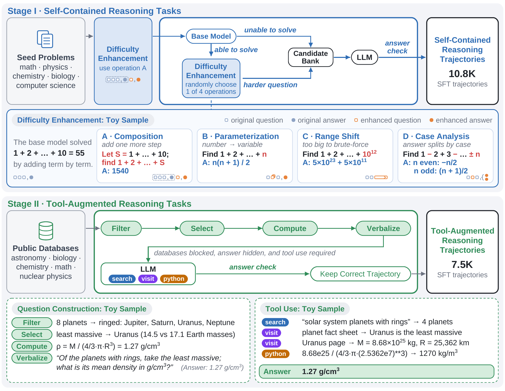

01SFT / STAGE I
Learn to reason.
Build self-contained scientific reasoning from public seed problems, then strengthen the questions using feedback from the base model.
Challenging problems → verified reasoningIntroducing Axion 1.0. Broad reasoning and tool use, built with two lightweight supervised stages and reinforcement learning.

ONE MODEL. A WORLD OF TOOLS.Building a capable agent does not have to mean building an increasingly elaborate training pipeline.
Axion 1.0 follows a clear progression: learn to reason, learn to acquire missing information, then refine those capabilities through interaction. The recipe combines two lightweight supervised fine-tuning stages with reinforcement learning.
The central investment is in the data: challenging, model-aware scientific problems and tool-dependent tasks with verifiable answers. This gives the model substantive problems to learn from at each stage.
Two supervised stages. One RL stage.
A simple recipe for capable agents.
Axion 1.0 is evaluated alongside leading open and proprietary models across scientific reasoning, information seeking, and biological data analysis.
Hover or focus on a model to highlight it across all six benchmarks. Click or tap to keep it selected.
Blue: Axion 1.0-122B · Teal: Axion 1.0-35B · Gray: comparison models
View original paper figure ↗Data from the paper’s comparison figure. Scores (%), as reported in the manuscript. HLE here is the full benchmark; training-stage comparisons below use HLE-130. BMB uses the human-difficult subset. Axion scores are the best single-run scores from three runs, or five for BMB. Baseline evaluation settings may differ; see the comparison table for source notes.
| Model | HLE | BMB | SEAL-0 | HiPhO | FS Olympiad | FS Research |
|---|---|---|---|---|---|---|
| Agents-A1 | 47.6 | — | 56.4 | 46.4 | 79.0 | 40.0 |
| Apodex 1.1 (ReAct) | 53.2 | 23.5 | — | — | — | 55.0 |
| Apodex 1.1 (Agent Team) | 56.1 | 35.3 | — | — | — | 63.3 |
| Gemini 3.1 Pro | 51.4 | 35.3* | 53.2* | 38.5* | 85.0* | 26.7* |
| Axion 1.0-35B | 59.1 | 35.3 | 62.2 | 45.7 | 86.0 | 56.7 |
| Axion 1.0-122B | 64.8 | 41.7 | 58.6 | 46.2 | 87.0 | 66.7 |
* Evaluated by the Axion team. Other baseline scores are from official reports. Cross-source comparisons may use different tools or execution settings. A dash denotes an unreported result.
Problem construction and trajectory collection are separate. Establish a question and a verifiable answer first; collect correct solution trajectories second.

Composition, parameterization, range shifts, and case analysis make problems harder in response to strategies the base model already uses successfully.
Structured data sources establish reference answers during construction. Solvers must recover the needed evidence through tools, without direct database access.
No dedicated mid-training, DPO, or on-policy distillation stages. Hover or select a stage to explore its role.
Build self-contained scientific reasoning from public seed problems, then strengthen the questions using feedback from the base model.
Challenging problems → verified reasoningExtend reasoning to tasks that require external information. Construct questions from real data and deterministic computation, and retain verified tool-use trajectories.
Missing information → grounded interactionRefine long-horizon reasoning and tool use with asynchronous GRPO and session-level training across agent trajectories.
Agent trajectories → refined behaviorChoose a benchmark, then hover or select a training stage to compare both models.
Scores (%) from the paper’s training-stage table. HLE-130 is a 130-question text-only subset, distinct from full HLE above; BMB uses the human-difficult subset. Sequential checkpoints show training progress; they do not isolate the causal effect of individual components.
Complete SFT trajectories preserve the conversation and tool observations within a 128K context window. Asynchronous RL separates rollout generation, policy optimization, and auxiliary services.
SFT training costs from the manuscript; these figures exclude RL and data generation.
FSDP, expert parallelism, and context parallelism support training on long interaction histories.
Dedicated rollout and trainer pools let environment interaction and policy updates proceed concurrently.
Token-In-Token-Out preserves token IDs; rollout routing replay aligns MoE expert choices between rollout and training.
Share the methods and code behind the training process.
Our open research materials cover data construction, prompts, training code, and the evaluation protocol.
Repository link as listed in the manuscript. See the repository for current release availability.
Open Agent Foundation Models, Simplified
† Project Lead
We introduce Axion 1.0, an agent foundation model that combines strong and broad agentic capabilities with a remarkably simple training recipe. Axion 1.0 is trained in only three stages: two lightweight supervised fine-tuning stages followed by reinforcement learning, without dedicated mid-training, direct preference optimization (DPO), or on-policy distillation (OPD).
The first SFT stage develops strong self-contained reasoning through model-aware data construction. The second stage extends these capabilities to tool-dependent reasoning through diverse and automatically verifiable tasks grounded in real-world data sources and deterministic computation. Finally, reinforcement learning further strengthens long-horizon reasoning and interaction with external tools and environments.
Axion 1.0 demonstrates that strong agentic capabilities can emerge from a simple training recipe, offering a practical path for further research on agent foundation models.
Adapted from the paper’s abstract.